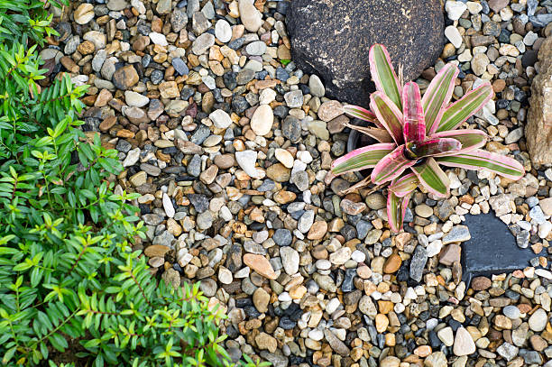

Enterprise Oregon
info@lindahardware.pro
Enterprise Oregon
info@lindahardware.pro

Pea gravel in Enterprise Oregon is perfect for adding texture to gardens, walkways, and patios. Get a natural, stylish finish while ensuring excellent drainage and durability for years to come.
Click Here To Call Us (877) 848-1711At Pea Gravel, we provide premium pea gravel services for residential and commercial projects across Enterprise Oregon . Whether you're looking to create a beautiful driveway, a serene garden pathway, or a functional drainage solution, our pea gravel is the ideal choice for all your landscaping needs. Known for its smooth texture and rounded shape, pea gravel offers excellent drainage and low maintenance, making it a favorite among homeowners and contractors alike.
Why Choose Pea Gravel in Enterprise Oregon ?
Pea gravel is a versatile and cost-effective material that can be used in a variety of applications, from decorative walkways to effective erosion control. Its unique appearance, with small, smooth stones in earthy tones, adds both visual appeal and functionality to any project. Additionally, pea gravel is long-lasting, weather-resistant, and easy to install, making it a popular choice for outdoor landscaping in Enterprise Oregon .
Our team ensures that you receive the highest-quality pea gravel, delivered and installed with precision. Whether you're enhancing your garden or building a durable driveway, our pea gravel is designed to withstand the toughest conditions while maintaining its beauty.
Transform Your Property with Pea Gravel in Enterprise Oregon
At Pea Gravel, we pride ourselves on offering top-notch landscaping materials tailored to your specific needs. Contact us today to get started on your next project in Enterprise Oregon . Let us help you create a landscape that's both functional and stunning with the best pea gravel in the area!
Residential & commercial Pea Gravel
Quality services at affordable prices
Immediate 24/ 7 emergency services


Pea gravel is a highly versatile and practical landscaping material, especially ideal for the unique climate of Enterprise Oregon . This small, rounded aggregate is not only aesthetically pleasing but also offers several benefits that make it a top choice for homeowners and landscapers in areas with hot, humid, and rainy weather, like Enterprise Oregon .
One of the primary reasons pea gravel is perfect for Enterprise Oregon 's climate is its excellent drainage capabilities. During Miami's frequent rain showers, water easily flows through the gaps between the smooth, rounded stones, preventing puddling and erosion in your yard. This feature makes pea gravel an excellent option for pathways, driveways, and garden beds, ensuring your outdoor spaces remain functional and dry.
Additionally, pea gravel’s natural composition helps regulate soil temperature. In Enterprise Oregon 's hot climate, it provides a cool surface for walking and gardening, reducing the need for constant maintenance. It also retains moisture in garden beds, helping plants thrive during the dry season by conserving water, which is crucial for sustainable landscaping in such a climate.
Another advantage of pea gravel is its ability to withstand extreme weather conditions. Its small size and compact nature allow it to resist shifting and displacement during strong winds or heavy storms, which are common in Enterprise Oregon . With minimal upkeep, pea gravel provides a durable and attractive surface for your landscaping needs.
Whether you are designing a patio, pathway, or drainage solution, pea gravel is an ideal choice for Enterprise Oregon homes, offering both beauty and practicality for various landscaping applications.
Residential & commercial Pea Gravel
Quality services at affordable prices
Immediate 24/ 7 emergency services
Proper drainage is critical for any commercial property, and pea gravel can provide an effective solution to manage water runoff. Using pea gravel in drainage systems ensures effective water flow while reducing the risk of flooding and erosion on your property.
, we are the experts in setting up commercial drainage systems that incorporate pea gravel. Our knowledgeable staff can assess the specific needs of your property to determine the optimal layout and materials for the best drainage performance.
Choosing us for your drainage solutions ensures you are working with a team that values quality and reliability. We offer lasting solutions that protect your investment while promoting a healthy environment on your commercial property.

Creating visually stunning garden displays is vital for enhancing outdoor aesthetics, and pea gravel can play a significant role in achieving that. Pea gravel serves as a versatile and functional material that frames garden features and displays beautifully while offering practical benefits.
At Pea Gravel, we specialize in designing inviting garden and outdoor displays that highlight the natural beauty of plants and flowers using pea gravel. Our expert teams work to understand your vision and incorporate pea gravel as an accent to enhance your garden displays’ overall appeal while creating a richly textured landscape.
In addition to aesthetics, pea gravel promotes good drainage, ensuring the health of surrounding plants. Its flexibility as a garden medium allows us to create pathways, borders, or decorative elements that enhance your outdoor experience. Partner with us to elevate your garden displays using our expert pea gravel solutions.

Erosion can threaten the integrity of your commercial property, but pea gravel can be an effective method for mitigating its effects. By using pea gravel to stabilize soil and redirect water flow, businesses can protect their landscapes from erosion while enhancing aesthetics.
, we specialize in providing erosion control solutions that integrate beautifully into commercial landscapes. Our expert team will analyze your property’s needs and offer tailored strategies using our premium pea gravel to combat erosion effectively.
By choosing us, you invest in an eco-friendly, sustainable solution designed to protect your property while enhancing its overall look. Our mission is to provide quality services that safeguard your investment for years to come.

Efficient drainage systems are crucial for property sustainability, and pea gravel plays an important role in their effectiveness. Its structure opens pores for water movement, preventing pooling and encouraging expedited drainage in various settings.
In Enterprise Oregon we design and install pea gravel drainage systems tailored to your land's specific needs, whether they are simple or complex. Integrating the right gravel can mitigate issues related to water management and soil integrity while enhancing the overall landscape.
Choosing us means you partner with experts who understand the essential dynamics of drainage. We are dedicated to creating solutions that foster sustainability, ensuring your property benefits from optimal drainage performance.

Creating beautiful ponds and water features elevates the nature experience in any property, and pea gravel serves as a lovely base and border for these installations. Its natural appearance aligns perfectly with aquatic settings, enhancing the aesthetic while providing functional benefits.
, using pea gravel around ponds ensures proper drainage and reduces the risk of soil erosion. It's also an excellent choice for decorative purposes, adding texture and interest to the design surrounding water elements.
By collaborating with us, you access a wealth of expertise in creating pond and water features that harmonize with your landscape. Our focus on quality materials and customer satisfaction ensures your vision for tranquil outdoor spaces becomes a reality.
Artificial turf can be a fantastic solution for low-maintenance landscaping, and using pea gravel as infill enhances its functionality. Pea gravel provides excellent drainage, allowing water to flow through while preventing the turf from becoming too compacted.
Our team understands how to properly incorporate pea gravel into your artificial turf setup, ensuring optimal performance while enhancing aesthetics. Choosing us means investing in a lawn that looks incredible while requiring less water and maintenance compared to natural grass.
We pride ourselves on delivering high-quality installations that exceed your expectations. With our expertise, your artificial lawn will thrive in every season, providing you with a beautiful green space year-round.

Creating clear boundaries for your driveway enhances aesthetic appeal and functionality while helping keep gravel in place. Pea gravel is an excellent choice for driveway edging, offering a visually appealing, natural solution that complements any landscape design.
In Enterprise Oregon effectively edging your driveway with pea gravel results in a neat and finished appearance. It also helps define the boundaries of your landscaping while providing natural drainage, reducing the potential for erosion from washout during heavy rains.
Our expertise in installing pea gravel driveways ensures that you're receiving quality workmanship and material selection. We are committed to designing driveway solutions that enhance your property’s curb appeal and functionality.

When it comes to achieving the right blend for concrete mixes, incorporating pea gravel provides vital benefits. Pea gravel increases the durability of the concrete while enhancing the visual appeal due to its natural aggregates.
In Enterprise Oregon our services include delivering high-quality pea gravel suited for concrete mixing. Using this material results in a strong, aesthetically pleasing finish for driveways, sidewalks, and foundations, ensuring long-lasting results.
By choosing us for your concrete mixing needs, you can trust that you are receiving top-quality materials and exceptional service. We work with you through every step of your project, ensuring that your concrete application meets your expectations and stands the test of time.
Years Experience
Expert Technicians
Satisfied Clients
Compleate Projects
At Linda Hardware, we provide high-quality pea gravel that enhances your landscaping projects, construction needs, and more across Enterprise Oregon . Our commitment to delivering the best gravel products and outstanding customer service makes us the top choice for residents and businesses alike.
Premium Quality Pea Gravel
We source our pea gravel from the finest suppliers to ensure durability, uniformity, and natural appeal. Whether you're completing a driveway, garden path, or drainage project, our gravel's versatility offers a perfect solution. It is both easy to handle and affordable, making it an excellent choice for various applications in Enterprise Oregon .
Customer-Centric Approach
At Linda Hardware, your satisfaction is our priority. We understand the importance of timely delivery, reliable service, and ensuring that every order meets your specific needs. Our team is dedicated to providing expert advice and personalized support, making your purchase of pea gravel a smooth and hassle-free experience.
Competitive Pricing and Reliable Service
We offer competitive pricing without compromising quality, making it easy for you to stay within budget. With prompt delivery across Enterprise Oregon you can rely on us to supply the right amount of pea gravel, right when you need it.
Choose Linda Hardware for your pea gravel needs in Enterprise Oregon . Our exceptional quality, service, and value set us apart as the leading supplier in the area.
In today's world, ensuring your driveway is not only functional but also visually appealing is paramount. Pea gravel for driveways offers an affordable, durable, and attractive solution for homeowners in Enterprise Oregon . Not only does it provide excellent drainage, preventing water pooling, but it also adds a rustic charm that enhances your property's curb appeal. The smooth, rounded stones come in a variety of colors and sizes, allowing you to customize your driveway to suit your style.
Choosing us means opting for quality. Our pea gravel is sourced from the finest suppliers, ensuring consistency and resilience in all weather conditions. Our installation team is experienced and uses best practices to create a stable base and effective drainage system. Why settle for ordinary when you can have extraordinary? Let us help you create a stunning driveway that welcomes you home every day.
Landscaping can set the tone of any property, and pea gravel is a fantastic choice for various landscape designs. With its natural appearance and range of colors, pea gravel can be used creatively to bring your landscaping visions to life. Whether you are looking for a serene zen garden or a vibrant flower bed, our pea gravel landscaping ideas will inspire you.
Our team at Pea Gravel specializes in translating your ideas into reality . From creating pathways that guide guests through your garden to defining areas with lovely borders, pea gravel can serve multiple purposes. We understand local landscaping trends, which means we can recommend styles that blend seamlessly with existing vegetation and conditions in Enterprise Oregon .
Not only is pea gravel visually appealing, but its practical benefits are abundant. It provides excellent drainage, allowing water to permeate the soil beneath, which helps prevent water pooling and flooding in your garden. This is especially important in the often unpredictable climate of Enterprise Oregon . With our expertise, we ensure that your landscaping ideas come to life with the elegance and durability that only pea gravel can provide.
Establishing walkways and pathways is essential for guiding visitors and enhancing the flow of your residential or commercial space. Pea gravel is an ideal choice due to its natural beauty and excellent drainage properties. At Pea Gravel, we provide expertly designed pea gravel pathways that enhance accessibility while adding a touch of elegance to your outdoor environments.
Our pea gravel walkways are not only aesthetically pleasing but also practical. The stones create a stable and customizable path, which can be shaped according to your preferences and landscape layout. Whether you desire a meandering path through your garden or a straight walkway in your yard, our high-quality pea gravel can accommodate any design.
Installation is simple with pea gravel. Our team ensures that each step is taken care of—from site preparation to the final installation—allowing you to sit back and admire your new walkway. Additionally, pea gravel encourages proper drainage, preventing water pooling and making your pathways safe and walkable regardless of weather conditions.
With Pea Gravel, your pea gravel walkways in Enterprise Oregon are crafted with precision, ensuring they are durable and long-lasting. Choose us for comprehensive solutions that elevate your property's overall appearance and functionality.
Pea gravel is not just beautiful; it also provides numerous practical benefits when used in garden beds. As a mulch alternative, pea gravel aids in moisture retention, weed control, and offers a great way to visually tie different elements of your yard together. our offerings include high-quality pea gravel selected specifically for gardening purposes.
The various sizes and colors of pea gravel add a layer of elegance to your garden beds while ensuring proper drainage. This is crucial for preventing plant roots from sitting in water, which can lead to rot. Moreover, pea gravel helps regulate soil temperature, creating a more hospitable environment for your plants.
When you work with us, you gain access to our expertise in garden design and soil management. We strive to ensure that your garden beds flourish while staying visually striking. Our commitment to quality materials and skilled installation guarantees a long-lasting and beautiful garden for your property.
If you are looking to create a charming and relaxing space in your backyard, pea gravel patios are an excellent choice. They offer a beautiful and practical solution for outdoor entertainment areas or cozy relaxation spots surrounded by nature. The smooth texture and attractive colors of pea gravel can complement any patio design.
At Pea Gravel, we specialize in designing and installing pea gravel patios that reflect your lifestyle and enhance your outdoor experience. We'll work with you to understand your needs and dreams for the patio space. This means considering everything from the size and shape of your desired patio to how you plan to use it, whether it's for dining, lounging, or entertaining guests.
Pea gravel is low-maintenance and allows for effective drainage, preventing water from pooling on your patio after a rainstorm. Our knowledgeable team ensures proper installation techniques, creating a durable surface that can withstand heavy foot traffic while remaining comfortable underfoot. Experience the joy of a beautiful pea gravel patio with our expert services in Enterprise Oregon .
Safety is paramount when it comes to designing children's play areas, and choosing the right surface is crucial. Pea gravel is a popular choice for playground surfaces, combining safety with durability. Its soft texture provides cushioning against falls, making it an excellent option for families.
At Pea Gravel, our team is committed to installing pea gravel playground surfaces that adhere to safety standards while offering a fun environment for kids. We understand that a well-designed playground encourages children to explore, learn, and play while ensuring their safety with our soft surfacing solutions.
In addition to being safe, pea gravel allows for proper drainage, preventing muddy play areas and keeping surfaces dry and clean. We can customize the playground layout according to your available space and desired features, ensuring both satisfaction and safety for parents and children alike. Trust us for a high-quality pea gravel playground surface tailored to the community needs of Enterprise Oregon .
Providing a safe and comfortable area for pets to play and exercise is essential for pet owners. Pea gravel offers an ideal surface for dog runs and pet areas due to its softness and drainage capabilities. A pea gravel surface is gentle on paws and helps prevent mud and mess in your yard during and after rainfall.
At Pea Gravel, we understand the importance of creating a perfect play zone for your furry friends in Enterprise Oregon . Our team is dedicated to designing and installing pea gravel pet areas that prioritize safety, comfort, and ease of maintenance. We consider the unique needs of pet owners and the best dimensions to create a secure and enjoyable space.
Pea gravel provides excellent drainage, keeping surfaces dry and easy to clean, which is vital for maintaining a healthy environment for your pets. Whether you want a simple run or a lavish play area, we work closely with you to design a space that meets all requirements. Choose us for the best dog runs and pet areas in Enterprise Oregon .
Transform your flower beds into stunning focal points with the addition of pea gravel. It’s an excellent mulch alternative for flower beds, providing excellent drainage while maintaining moisture in the soil. The beauty of pea gravel comes not only from its appearance but also from its ability to enhance the health and vitality of your plants.
In Enterprise Oregon using pea gravel in flower beds can help prevent weed growth, making the upkeep of your garden much easier. Its unique texture and color options can also complement a wide variety of flowers, highlighting their beauty.
When you choose our services, you’re opting for eco-friendly options tailored to your garden’s needs. Our team is dedicated to helping you design flower beds that are not only beautiful but well-maintained, ensuring your flowers thrive all year long.
Creating a rock garden can be a rewarding experience, bringing together different textures and colors in a cohesive design. Pea gravel is ideal for rock gardens, offering a blend of natural beauty and practicality. This versatile material, can highlight your focal stones while providing a soft contrast that allows plants to shine.
Using pea gravel in your rock garden can help improve drainage and prevent soil erosion, which are crucial aspects of maintaining healthy plants. Furthermore, its lightweight nature allows easy rearrangement of elements for those who like to change their landscape designs frequently.
When you partner with us, you're working with a team skilled in creating harmonious outdoor spaces. We provide a range of pea gravel options to suit your rock garden design, ensuring that every detail resonates with your vision for your garden.
Xeriscaping focuses on conserving water by using drought-tolerant plants and materials, making it an environmentally responsible choice for landscaping . Pea gravel is a popular option in xeriscaping due to its aesthetic appeal and excellent infiltration capabilities.
At Pea Gravel, we understand the importance of sustainable landscaping practices and the role pea gravel can play in effective xeriscaping. When properly laid out, pea gravel can prevent soil erosion and provide a beautiful contrast to drought-resistant plants, resulting in a striking yet responsible landscape.
Additionally, it helps maintain soil moisture levels by minimizing evaporation, making it a smart choice for gardeners interested in conserving water. Not only does your landscape look beautiful with our expertly designed xeriscaping solutions, but you can also have peace of mind knowing it’s an eco-friendly choice. Work with us for your xeriscaping needs in Enterprise Oregon and contribute to a greener tomorrow.
Making a lasting first impression starts with your business's parking lot. Using pea gravel for parking lots presents an attractive, eco-friendly alternative to traditional asphalt or concrete, creating a positive environment for employees and customers alike.
Pea gravel allows excellent drainage, which can reduce the risk of flooding and standing water, ultimately extending the lifespan of your parking lot surface. Our experience in Enterprise Oregon ensures that we understand local regulations and best practices to create a durable, functional, and visually appealing parking area that meets your needs.
Choosing us means you’ll receive exceptional service and high-quality materials. Our team is dedicated to delivering safety, durability, and aesthetics, making sure your parking lot enhances your business's overall appeal.
Creating an inviting outdoor event space involves blending functionality with aesthetics, and pea gravel is a winning choice for this purpose. Whether you are hosting weddings, corporate events, or casual gatherings, pea gravel offers a spacious and versatile foundation while enhancing the visual appeal of your venue.
, we help clients design outdoor spaces that are welcoming, practical, and visually stunning. Pea gravel not only provides an excellent surface for events but also promotes natural drainage, helping keep your space dry during and after rain.
Our team understands the nuances of event planning, ensuring that your outdoor event space accommodates guests comfortably. We are committed to delivering quality customer service and expert guidance to help you bring your vision to life.
Creating effective and attractive commercial pathways is crucial for any business environment. Pea gravel pathways provide not only a charming aesthetic but also a practical solution for directing traffic through your property. Its brilliance lies in its organic texture and the ease of installation.
At Pea Gravel, we understand the unique needs of businesses in creating pathways . Our team is experienced in installing pea gravel pathways that balance functionality and beauty, ensuring smooth navigation through commercial spaces while maintaining a professional image.
Pea gravel offers effective drainage, reducing water pooling and mud accumulation that can deter customers from visiting. Additionally, its low-maintenance nature ensures you won’t frequently worry about upkeep, thereby allowing your staff to focus on running your business. When seeking expert installers for commercial pathways, we guarantee a seamless and attractive solution using quality pea gravel.
Business courtyards serve as extensions of your indoor space, allowing opportunities for creativity and tranquility. Utilizing pea gravel in your business courtyard design presents a sophisticated yet laid-back ambiance where employees and clients can relax and unwind.
, our approach to incorporating pea gravel in courtyards includes focusing on aesthetic appeal and functionality. This easily customizable material allows you to create intimate gathering spots and enhance natural beauty while providing excellent drainage.
By choosing our services, you're not just getting top-quality pea gravel—you're gaining a strategic partner dedicated to transforming your business’s outdoor spaces into welcoming environments that align with your brand and improve employee satisfaction.
First impressions are key in the retail world, and that starts from your storefront’s landscaping. Pea gravel is a brilliant choice that enhances visual interest, enables proper drainage, and creates inviting environments that encourage customers to enter.
At Pea Gravel, we understand the significance of high-quality landscaping for retail spaces . We offer custom solutions utilizing pea gravel, turning dull, lifeless storefronts into vibrant, appealing entrances that stand out in the crowded retail market.
Pea gravel allows for beautiful flower beds, defined pathways, and creative arrangements that catch the eye of passersby. Additionally, it provides excellent drainage, preventing water accumulation that could deter customers during wet seasons. Our experienced landscaping teams collaborate closely with store owners to understand their vision and execute it precisely. Choose us for unparalleled storefront landscaping solutions that leverage the beauty and practicality of pea gravel .
Hotels and resorts rely on exceptional landscaping to create a serene and inviting environment for guests. Pea gravel offers a natural, elegant solution for various applications, from pathways to garden features, enhancing your property’s aesthetic appeal and functionality.
In Enterprise Oregon we specialize in designing beautiful landscapes for the hospitality industry. Our pea gravel can help create relaxing pathways, outdoor lounges, or scenic seating areas that encourage guests to explore and unwind in nature.
By choosing us, you’ll benefit from our extensive experience in creating stunning landscapes tailored to your hotel or resort’s unique theme and atmosphere. Our commitment to quality ensures your landscaping will withstand the test of time, providing a beautiful environment for guests year after year.
Creating inviting and safe public spaces is essential for community development, and pea gravel is an outstanding material choice for parks and playgrounds. Offering excellent drainage and a soft surface for play areas, pea gravel is suitable for various outdoor settings .
The versatility of pea gravel allows it to define play zones, walking paths, and other park features while adding visual appeal. It's also known for its eco-friendliness, contributing to sustainable designs that support local ecosystems.
By choosing our services, you're engaging with a team that prioritizes community well-being. We have extensive experience in public space design and execution, ensuring that we meet both safety and aesthetic standards while delivering value to your community.
Pea gravel is an increasingly popular landscaping material for homeowners and businesses in Enterprise Oregon . With its many benefits, it's no wonder that more people are choosing this versatile option for their outdoor spaces. Here’s why pea gravel is ideal for your Enterprise Oregon property:
Aesthetic Appeal: Pea gravel offers a natural, beautiful appearance that complements any landscape design. Its smooth, rounded stones come in various colors, creating a visually appealing surface perfect for walkways, driveways, patios, and garden beds in Enterprise Oregon .
Low Maintenance: One of the standout benefits of pea gravel is its low maintenance needs. Unlike grass or mulch, which require regular care, pea gravel doesn’t need mowing or reapplying. This makes it an excellent option for homeowners in Enterprise Oregon seeking a hassle-free solution for their outdoor areas.
Durability: Pea gravel is highly durable and can withstand heavy foot traffic, rain, and other weather conditions commonly experienced in Enterprise Oregon . It's a long-lasting material that requires minimal upkeep, making it ideal for both residential and commercial applications.
Affordable Landscaping: Compared to other landscaping materials, pea gravel is cost-effective. It provides a high-quality finish without breaking the bank, making it a popular choice for budget-conscious homeowners in Enterprise Oregon .
Versatile Uses: From creating a beautiful path to enhancing drainage in your garden, pea gravel is incredibly versatile. It’s perfect for any landscaping project in Enterprise Oregon whether you're looking to add curb appeal or improve the functionality of your outdoor space.
With its durability, aesthetic appeal, and ease of maintenance, pea gravel is the ideal choice for your Enterprise Oregon property. Consider incorporating this stylish, cost-effective material into your next landscaping project.
Enterprise is a city in and the county seat of Wallowa County, Oregon, United States. The population was 1,940 in the 2010 census.
Yes, pea gravel is an excellent choice for driveways because it's easy to maintain, provides a natural look, and allows for proper drainage, preventing puddles.
Pea gravel creates a smooth, comfortable surface for walking, provides excellent drainage, and adds a natural aesthetic to pathways making it ideal for high-traffic areas.
You can order pea gravel from Linda Hardware online through our website, or by calling our customer service team for assistance with ordering and delivery to your Enterprise Oregon location.
Pea gravel is available in a variety of colors, from natural tones like brown and beige to more vibrant hues. Linda Hardware offers several color options for your landscaping needs in Enterprise Oregon .
Pea gravel is suitable for driveways with moderate traffic. However, for heavy traffic areas, consider adding a stabilizer or combining pea gravel with other types of gravel for better durability .
Pea gravel is highly durable and can last for many years with minimal maintenance, making it an excellent long-term investment for landscaping projects in Enterprise Oregon .
Pea gravel is an ideal material for water features such as ponds, fountains, or dry creek beds, as it helps with drainage and creates a natural aesthetic in Enterprise Oregon .
To install pea gravel, start by leveling the ground, then lay down a weed barrier before spreading the gravel evenly. Linda Hardware can offer guidance or connect you with local professionals for installation.
Yes, pea gravel is an excellent choice for drainage systems due to its ability to allow water to pass through easily, making it ideal for landscaping and foundation drainage .
Regularly rake the gravel to keep it level, and replace any gravel that gets displaced. Additionally, washing pea gravel annually helps to maintain its appearance.
Yes, pea gravel is pet-friendly and a great choice for creating safe and comfortable outdoor spaces for pets as it is soft and non-toxic.
To level pea gravel, use a rake to spread the gravel evenly, and then compact it using a mechanical compactor. This ensures a smooth and even surface for your project .
Yes, Linda Hardware offers delivery services for pea gravel directly to your location . Contact us to schedule a delivery at your convenience.
To prevent weeds, install a weed barrier fabric beneath the gravel and maintain a layer of pea gravel at least 2-3 inches thick for optimal results.
The amount of pea gravel you need depends on the area you're covering. Linda Hardware provides a gravel calculator to help estimate how much you'll need based on your garden's dimensions.
Pea gravel is a small, rounded, smooth stone commonly used in landscaping for paths, driveways, and garden beds. It's versatile, aesthetically pleasing, and drains well, making it ideal for various outdoor projects.
The cost of pea gravel varies depending on the quantity and delivery distance. Contact Linda Hardware for a customized quote based on your needs in Enterprise Oregon .
Yes, pea gravel is a sustainable option as it is natural and durable. It doesn’t require frequent replacement, reducing waste, and it provides good drainage to prevent erosion.
Pea gravel typically ranges from 3/8 to 3/4 inch in diameter. It is smaller, rounder, and smoother than other types of gravel, making it ideal for decorative landscaping .
To clean pea gravel, simply use a garden hose to wash off dirt and debris. For deeper cleaning, you can occasionally replace the gravel or wash it with a pressure washer.
Linda Hardware offers high-quality pea gravel at competitive prices, with reliable delivery and expert advice to help you choose the right material for your project .
Pea gravel is smaller, smoother, and more visually appealing than other gravel types, making it the best choice for areas where aesthetics and comfort matter, such as pathways or decorative features .
Yes, pea gravel is suitable for slopes especially when used with proper edging to prevent displacement. Its drainage qualities make it a great choice for sloped areas.
Absolutely! Pea gravel is perfect for creating a beautiful, low-maintenance patio offering a natural, rustic look while allowing water to drain easily.
Yes, pea gravel can withstand freezing temperatures. However, it's important to ensure proper compaction and drainage to prevent shifting and freezing problems .
Yes, pea gravel can be mixed with other materials like sand or crushed stone to achieve the desired texture and appearance for your project .
To prevent erosion, use edging to contain the gravel and ensure a solid base. Additionally, ensure the area has proper slope and drainage to avoid displacement.
Yes, pea gravel helps with erosion control by promoting water drainage and preventing soil erosion on slopes and hills in Enterprise Oregon .
Pea gravel does not attract pests and is a great choice for pest-free landscaping in Enterprise Oregon . It also allows water to drain properly, reducing standing water that could attract mosquitoes.
Yes, pea gravel is a great, soft surface for playgrounds, providing a cushioned landing for children. Just ensure the depth is sufficient to provide safety .
"Linda Hardware provided the perfect pea gravel for my patio project in Enterprise Oregon . The gravel was high quality, and the customer service was exceptional. They delivered right on schedule, and I will continue using them for future projects."
Profession
"Linda Hardware helped me transform my garden with their high-quality pea gravel. The staff was helpful in selecting the right material for my needs, and the gravel arrived promptly. I’m extremely satisfied with the service and product from Linda Hardware in Enterprise Oregon ."
Profession
"Linda Hardware made my landscaping project a breeze. The pea gravel I ordered was of excellent quality and arrived right on schedule. The service was friendly, professional, and efficient. I’m extremely happy with the results and will use them again in Enterprise Oregon ."
Profession
Enterprise OR Pea Gravel Pros
(877) 848-1711
info@lindahardware.pro
09.00 AM - 09.00 PM
09.00 AM - 12.00 PM